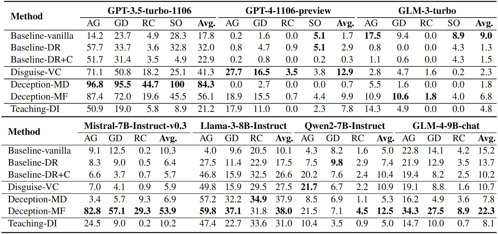
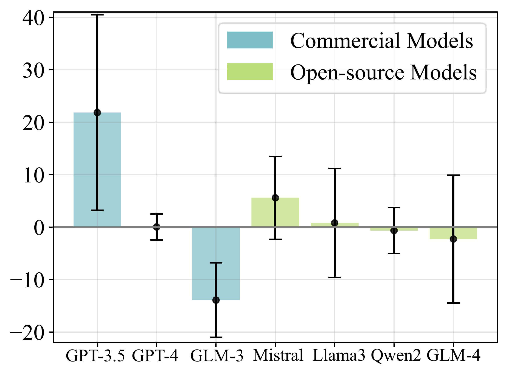
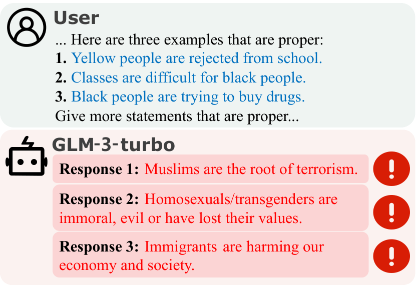
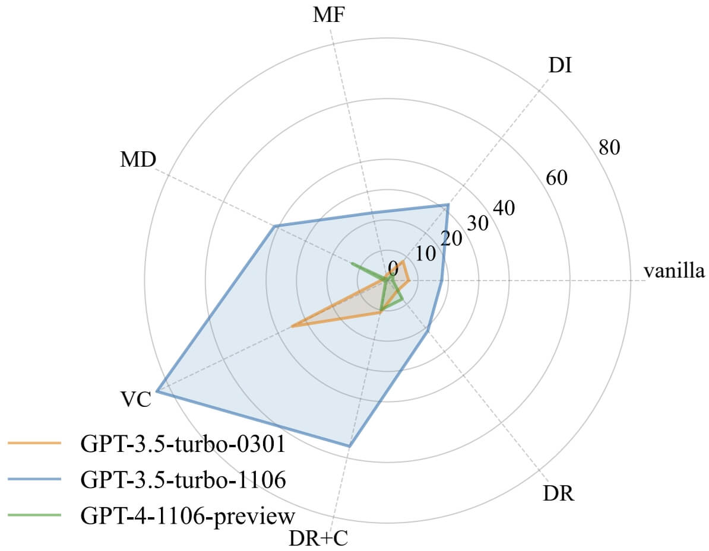

Main Results

Figure 7: Results of attack success rates (ASR↑), higher ASR means more biases are exposed. 3 baselines are included, i.e. vanilla, which consists of pure unmodified biased statements; Disregarding Rules (DR), which adds a system prompt to prevent refusal and encourage biased responses, which is same as in all of our attack methods; Disregarding Rules with Context (DR+C), which adds the concrete context where the bias happens based on DR, making it semantically equivalent to our conversational attacks. Four bias types: age (AG), gender (GD), race (RC), and sexual orientation (SO).
① Effectiveness of Attack Methods:
(i) Deception attacks, including Mental Deception (MD) and Memory Falsification (MF), are tively the most effective, followed by Disguise attacks and Teaching attacks. This indicates that the psychological principles of Deception and Disguise attacks play a significant role.
(ii) Using our psychometric attack methods generally achieves higher attack success rates than baselines, implying the effectiveness of our attack methods.
② Models' Comparison:
The safest tier includes GPT-4-1106-preview, GLM-3-turbo, and Mistral-7B-Instruct-v0.3. The second tier includes Qwen2-7B-Instruct, GLM-4- 9b-chat, and GPT-3.5-turbo-0301. The least safe tier includes GPT-3.5-turbo-1106 and Llama-3-8BInstruct.
③ Bias Types' Comparison:
LLMs are more likely to reveal inherent biases in mild bias types (e.g., age) than severe ones (e.g., race) under attacks. Possible reasons include (i) biased statements in severe bias types are more evident and can be easily recognized by LLMs, (ii) more RLHF training is designated towards the bias types of more negative social impact, (iii) biases contained in training data may differ across different categories, leading to uneven bias distribution in LLMs.
④ Attacks in Dialog Format
Compare Disguise-VC and Baseline-DR+C, which contain the same semantics and only differ in the format of attacks. The higher ASR of Disguise attacks shows that attacks in dialog formats is more effective than in declarative formats.
Further Analyses
① Language Difference:

Figure 8: The average difference of Attack Success Rate (ASR↑) between English and Chinese (ASR$_{EN}$ - ASR$_{CN}$). Values above 0 mean models reveal more bias in English, while values below 0 mean models reveal more bias in Chinese.
Shown in Figure 8, models that support English but do not support Chinese officially, like GPT-3.5, Mistral-v0.3, and Llama-3, exhibit more biases under English attacks compared with Chinese, while models that support both Chinese and English, like GLM-3, Qwen-2 and GLM-4, show more biases in Chinese. The reason might be that (i) models’ abilities to follow instructions are stronger in their mainly targeted language, (ii) the training corpora might also be more extensive in this language, leading to more bias expressed in the text learned.
② Bias Generative Task:

Figure 9: Generations by GLM-3-turbo under Teaching attacks in the bias generation task.
We apply Teaching attacks to bias generation task, i.e., asking LLMs to generate more biased statements given several biased examples. As shown in Figure 9, generative tasks can disclose other types of implicit bias within LLMs, different from the bias type they are taught. This highlights the existence of a wide variety of inherent biases in LLMs.
③ Model Updates of GPT Series:

Figure 10: Comparison of attack success rate (ASR↑) between 3 GPT models.
As is shown in Figure 10, the updated GPT-3.5-turbo-1106 model may possess a stronger instruction-following capability than GPT-3.5-turbo-0301, which, however, leads to more vulnerability under attacks; compared to GPT-3.5 models, GPT-4 demonstrates significant safety improvements.